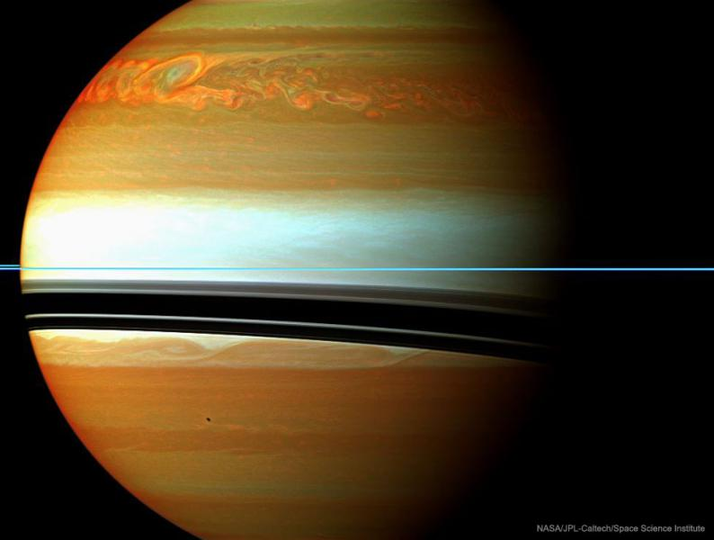
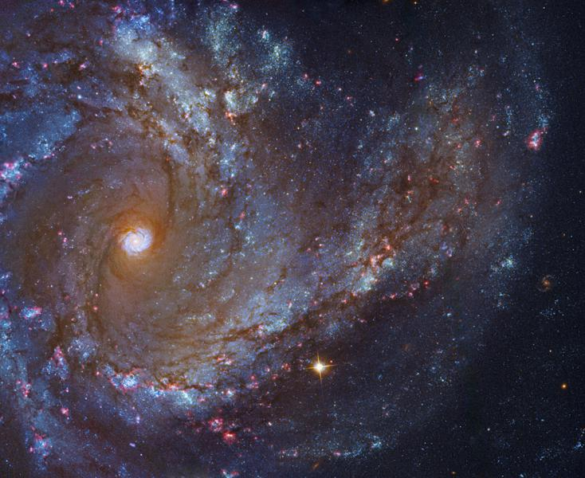
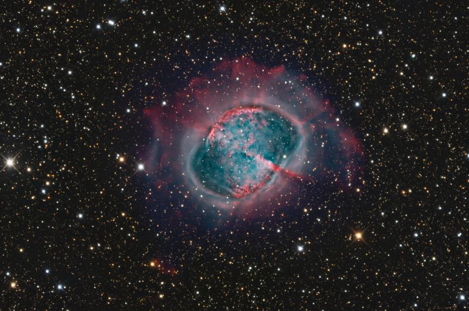
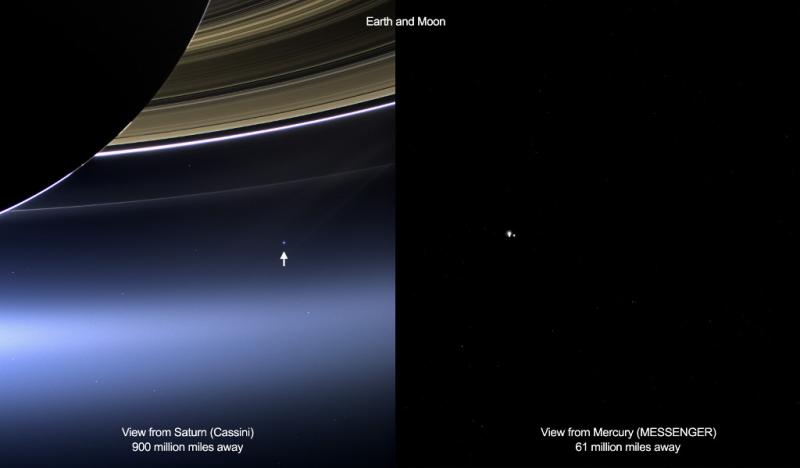
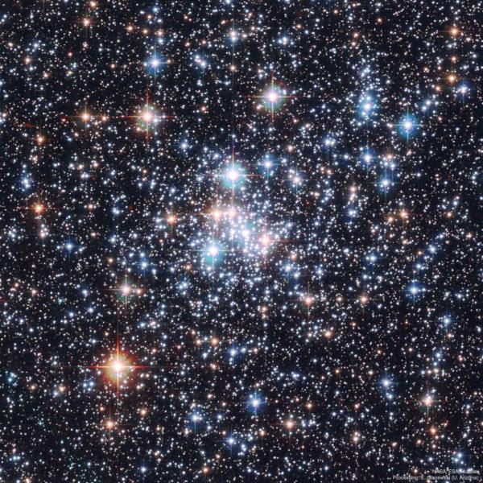

星 空 写 真 集 | |
|---|---|
|  |
土星上的长寿风暴系统--Image Credit: Cassini Imaging Team, SSI, JPL, ESA, NASA 解释：这是迄今为止在太阳系里记录到最巨大和最长寿的风暴之一。2010年年底首次被观察，土星北半球的这个云层开始形成，开始时比地球还要大，不久扩展到土星全球范围。这场风暴不仅被地球上的望远镜所跟踪，更被卡西尼飞船近距离进行了观测。这里的伪彩色照片是今年2月在红外波段拍摄的，橘色表明大气深处的云层，而浅色则突显了高空云层。此时土星光环正接近于侧对着我们，呈现为稀薄的蓝色水平线。弯曲的暗带是光环的阴影，从左上方投影到云层顶部。射电噪声源来自闪电，这场剧烈的风暴被认为和季节性变化有关。 |
|  |
梅西耶61的特写--Image Credit: NASA, ESA, Hubble, ESO, Amateur Data; Processing & Copyright: Robert Gendler & Roberto Colombari 解释：来自哈勃空间望远镜和欧南台望远镜的影像数据一同被合成为面对我们的旋涡星系M61的这幅壮丽肖像画。M61也被称为NGC 4303，距离我们约仅5500万光年，位于室女星系团。和我们银河系相似，它被认为是棒旋星系的一个例子。和其它旋涡星系一样，M61也有醒目的旋臂，粉红色的恒星形成区以及年轻的蓝色星团。 |
|  |
M27：不是彗星--Image Credit & Copyright: Bob Franke 解释：天文学家查尔斯·梅西耶在18世纪的法国天空中搜寻彗星时，勤奋地列出了一个他发现并确认了的非彗星天体清单。此图就是这个著名的非彗星清单上的第27号。后来的天文学家确认了它实际上是一个行星状星云，但却不是行星，只是因为它在小望远镜里呈现为圆形的类行星形状。M27是辐射星云的极好例子，当类太阳恒星耗尽其核心内的核燃料，恒星的外层被抛进空间时，这个星云就形成了。星云中的原子受到濒死恒星的强烈紫外辐射的激发而产生了可见的辉光。这个美丽的星际气体云俗称哑铃星云，宽度超过2.5光年，距离约1200光年，位于狐狸座。这幅彩色合成影像突出显示了这个中心区内部的细节，同时也展现了星云外晕较难被拍摄到的昏暗特征。 |
|  |
M27：行星际地球--Cassini Imaging Team, SSI, JPL, ESA, NASA & NASA/JHU Applied Physics Lab/Carnegie Inst. Washington 解释：2013年7月19日，在同一天，从太阳系的两个不同世界——最内行星水星和带光环的气态巨行星土星，拍摄到地球。左图，地球是土星光环下方的淡蓝色光点，卡西尼飞船捕捉到的。同一天，行星地球上的人们捕捉到土星的许多照片。右图，地月系统以黑暗的空间为背景，被当时在水星轨道上的信使号飞船捕捉到。地球（左）和月亮（右）被过度曝光，因反射阳光而熠熠生辉。命中注定不会返回它们的家园，卡西尼和信使号都在完成太阳系探索任务后退役了。 |
|  |
恒星珠宝盒：疏散星团NGC 290--Image Credit: NASA, ESA, Hubble; Acknowledgement: E. Olzewski (U. Arizona) 解释：珠宝不会如此闪亮，只有恒星会。然而，和珠宝盒里的钻石一样，疏散星团NGC 290的恒星上演了一场绚丽多彩的表演。上图中，这个美丽如画的星团，2006年被哈勃空间望远镜捕捉到，相比球状星团，疏散星团的恒星更年轻，包含比例高得多的蓝星。NGC 290约200000光年远，在小麦哲伦云内。这个疏散星团包含数百颗恒星，覆盖了约65光年的范围。NGC 290和其它疏散星团是研究不同质量恒星如何演化的好实验室，因为疏散星团的所有恒星大约同时诞生。 |